Malheureusement, il n'y a pas de réponse définitive à cette question. Tout en sachant que nous n'arriverons pas à satisfaire tout le monde, essayons tout de même. Il est à noter que cette définition est rarement utilisée parce que d'une part, on ne traite pas toujours avec des fonctions et d'autre part, on ne travaille pas toujours avec des espaces de Hilbert.
Condition 1. Une base d'ondelettes doit inclure des bases de Riesz pour une famille de sous-espaces de Hilbert 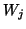 d'un espace de Hilbert 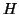, on note ces bases de Riesz (3.3) 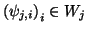 et on doit pouvoir écrire 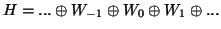. Par la condition de Riesz, nous avons 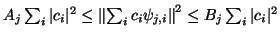. On dira que la base est stable si 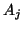 et 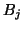 sont constants (indépendant de 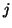).
Condition 2. Toutes les ondelettes doivent avoir une masse nulle 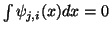 (voir 3.11).
Condition 3. Il doit y avoir une condition d'échelle, c'est à dire qu'il existe 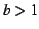 tel que 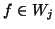 implique 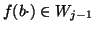. On choisit normalement 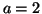 (cas dyadique). En d'autres terms, dans le cas dyadique, on exige que si 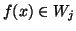 alors 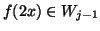.
La condition 1 peut être réduite à exiger que les ondelettes forment un repère (3.5).